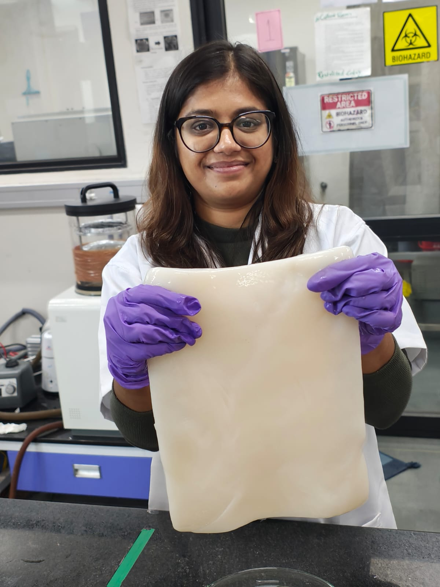

Welcome to our Research Lab
We are dedicated to advancing materials science with a focus on Bacterial Cellulose and innovative composite applications.

We are dedicated to advancing materials science with a focus on Bacterial Cellulose and innovative composite applications.
Professor, Department of Materials Science and Metallurgical Engineering
Dr. Khandelwal's research focuses on cellulose composites, drug delivery, food packaging, and soft actuators...
Our group actively explores the following domains:
A complete record of our group's research output and intellectual property.
Pharmaceutical compositions and delivery systems for prevention and treatment of candidiasis
Patent Number: US Patent App. 17/276,478 | Year: 2022
Freeze‐Dried Bacterial Cellulose‐Based Point‐of‐Care Device for Antibiotic Susceptibility Testing (AST)
Macromolecular Bioscience 26 (1), e00557
Dual‐Stimuli Chemotherapeutic Delivery From Magnetic Bacterial Nanocellulose: Unraveling the Optimized Loading and Release at Tailored Wetting and Localized Heating
Small 21 (50), e01284
Mechanistic Progress and Challenges for Carbon‐Based Protective Interlayer/Separator Modification for the Practical Development of Next‐Generation Alkali Metal–Sulfur Batteries
Batteries & Supercaps 8 (12), e202500219
Man-material-matters: a dialogue
Proceedings of the Indian National Science Academy, 1-13
Integrating life into material design for living materials 4.0: Navigating challenges and future trajectories from static to dynamic evolution
Materials Today
Nanoscale Synergy: Transforming First Formed Film of Bacterial Cellulose into High‐Performance Functional Fibers
Small 21 (31), 2501880
Governing the magnetic hyperthermia performance through assembly effect in superparamagnetic biocomposites: Dispersed chains and clustered assemblies immobilized on the …
Journal of Magnetism and Magnetic Materials 625, 173076
Hole controlled displacement behaviour of conducting polymer actuators
Composites Part B: Engineering 301, 112525
Concentration-dependent bacterial cellulose patches: a strategy for modulating the drug release beyond the modifications of the native cellulose hydrogel
Proceedings of the Indian National Science Academy 91 (2), 625-636
Bacterial cellulose in transdermal drug delivery systems: Expanding horizons in multi-scale therapeutics and patient-centric approach
International Journal of Pharmaceutics 671, 125254
Bacterial Nanocellulose and Plant Fiber derived (Nano and Micro) Carbon Fiber-Based Sensors to Detect Volatile Organic Compounds
2025 IEEE Applied Sensing Conference (APSCON), 422-425
Drug release kinetics from in-situ modulated agar/chitosan-bacterial cellulose patches for differently soluble drugs
International Journal of Biological Macromolecules 283, 137602
Review on need for designing sustainable and biodegradable face masks: Opportunities for nanofibrous cellulosic filters
International Journal of Biological Macromolecules 283, 137627
Tailoring the wettability of bacterial cellulose magnetobots via the assembly of in situ synthesized and surfactant-coated magnetic nanoparticles
Langmuir 40 (42), 22433-22445
Utilization of natural fiber–derived active agents for shelf life extension of broccoli and guava
Biomass Conversion and Biorefinery 14 (19), 24753-24764
Engineering a biomimetic glomerular filtration barrier: coculturing endothelial podocytes on kidney ECM-Bacterial cellulose membrane hybrid
ACS Applied Materials & Interfaces 16 (39), 52008-52022
In-situ banana fiber-modified carbonized bacterial cellulose as a free-standing and binder-free cathode host for potassium-sulfur batteries
Carbon Trends 16, 100391
Quantum capacitance: The large but hidden capacitance in supercapacitors
Carbon Trends 16, 100385
Analyzing the structural behavior of conducting polymer actuators and its interdependence with the electrochemical phenomenon
Smart Materials and Structures 33 (4), 045017
Bacterial cellulose-derived carbon as a self-supported and flexible anode for stable-performance lithium-ion batteries
Journal of Electroanalytical Chemistry 957, 118142
Attributes of nanomaterials and nanotopographies for improved bone tissue engineering and regeneration
ACS Applied Bio Materials 6 (10), 4020-4041
Bacterial Cellulose-Derived Self-Supported Carbon Electrodes for Stable Performance Metal–Sulfur Batteries: A Novel Approach toward Full-Cell Studies
Energy & Fuels 37 (17), 13546-13553
Carbonized bacterial cellulose as free-standing cathode host and protective interlayer for high-performance potassium-sulfur batteries with enhanced kinetics and stable operation
Carbon 212, 118173
PEDOT: PSS‐bacterial cellulose bilayer actuators: From the movement of ions to deflection
Polymers for Advanced Technologies 34 (7), 2407-2413
Nanofiber-based systems for stimuli-responsive and dual drug delivery: present scenario and the way forward
ACS Biomaterials Science & Engineering 9 (6), 3160-3184
Biocompatible and antimicrobial multilayer fibrous polymeric wound dressing with optimally embedded silver nanoparticles
Applied Surface Science 612, 155799
Carbonized bacterial cellulose-derived binder-free, flexible, and free-standing cathode host for high-performance stable potassium–sulfur batteries
ACS Applied Energy Materials 6 (5), 3042-3051
TiO2 Decorated SiO2 Nanoparticles as Efficient Antibacterial Materials: Enhanced Activity under Low Power UV Light
ChemistrySelect 8 (4), e202203724
Cellulose-based natural nanofibers for fresh produce packaging: current status, sustainability and future outlook
Sustainable Food Technology 1 (4), 528-544
Covalently confined sulfur composite with carbonized bacterial cellulose as an efficient cathode matrix for high-performance potassium–sulfur batteries
ACS Sustainable Chemistry & Engineering 10 (50), 16634-16646
Antibacterial properties of Cu containing complex concentrated alloys
Materials Today Communications 33, 104915
Enzymatic degradation of bacterial cellulose derived carbon nanofibers (BC-CNF) by myeloperoxidase (MPO): Performance evaluation for biosensing
Biosensors and Bioelectronics: X 12, 100252
Flexible and free-standing bacterial cellulose derived cathode host and separator for lithium-sulfur batteries
Carbohydrate Polymers 293, 119731
Ultra-high-rate lithium-sulfur batteries with high sulfur loading enabled by Mn2O3-carbonized bacterial cellulose composite as a cathode host
Electrochimica Acta 422, 140531
PEDOT: PSS/Bacterial Cellulose-based soft actuator under triangle and square wave: Deflection, response and fidelity
Synthetic Metals 286, 117053
Current international research into cellulose as a functional nanomaterial for advanced applications
Journal of Materials Science 57 (10), 5697-5767
TiO2@ SiO2 nanoparticles for methylene blue removal and photocatalytic degradation under natural sunlight and low-power UV light
Applied Surface Science 576, 151745
Industrial-scale fabrication and functionalization of nanocellulose
Nanocellulose Materials, 21-42
In situ tunability of bacteria derived hierarchical nanocellulose: current status and opportunities
Cellulose 28 (16), 10077-10097
Antimicrobial surfaces: a review of synthetic approaches, applicability and outlook
Journal of Materials Science 56 (32), 17915-17941
Catalytic graphitization of bacterial cellulose–derived carbon nanofibers for stable and enhanced anodic performance of lithium-ion batteries
Materials Today Chemistry 20, 100439
Bacterial cellulose-based drug delivery system for dual mode drug release
Transactions of the Indian National Academy of Engineering 6 (2), 265-271
Drug release behaviour and mechanism from unmodified and in situ modified bacterial cellulose
Proceedings of the Indian National Science Academy 87 (1), 110-120
Ex-situ modification of bacterial cellulose for immediate and sustained drug release with insights into release mechanism
Carbohydrate Polymers 249, 116816
Bacterial cellulose–polyaniline composite derived hierarchical nitrogen-doped porous carbon nanofibers as anode for high-rate lithium-ion batteries
ACS Applied Energy Materials 3 (9), 8676-8687
In situ synthesized hydro-lipophilic nano and micro fibrous bacterial cellulose: polystyrene composites for tissue scaffolds
Journal of Materials Science 55 (12), 5247-5256
Bacterial cellulose with microencapsulated antifungal essential oils: a novel double barrier release system
Materialia 9, 100585
Tuning the physiochemical properties of bacterial cellulose: effect of drying conditions
Journal of Materials Science 54 (18), 12024-12035
Recycling of thermoplastic polystyrene waste using citrus peel extract for oil spill remediation
Journal of Applied Polymer Science 136 (33), 47886
Wetting transition from lotus leaf to rose petal using modified fly ash
ChemistrySelect 4 (27), 7936-7942
Modulated dehydration for enhanced anodic performance of bacterial cellulose derived carbon nanofibers
ChemistrySelect 4 (21), 6642-6650
Cultured meat: state of the art and future
Biomanufacturing Reviews 3 (1), 1
Broad-spectrum antimicrobial activity of bacterial cellulose silver nanocomposites with sustained release
Journal of Materials Science 53 (3), 1596-1609
Bacterial cellulose-derived carbon nanofibers as anode for lithium-ion batteries
Emergent Materials 1 (3), 105-120
A novel transdermal drug-delivery patch for treating local muscular pain
Therapeutic Delivery 9 (6), 405-407
Effect of micropatterning induced surface hydrophobicity on drug release from electrospun cellulose acetate nanofibers
Applied Surface Science 426, 755-762
Cellulose acetate derived free-standing electrospun carbon nanofibrous mat as anode material for rechargeable lithium-ion battery
Electrochemical Society Transactions 232 80 (10), 419-424
Three-dimensional bioprinting for bone tissue regeneration
Current Opinion in Biomedical Engineering 2, 22-28
Fabrication of bio-inspired hydrophobic self-assembled electrospun nanofiber based hierarchical structures
Materials Letters 196, 339-342
Three‐dimensional electrospun micropatterned cellulose acetate nanofiber surfaces with tunable wettability
Journal of Applied Polymer Science 134 (15)
In situ tunability of bacteria produced cellulose by additives in the culture media
Journal of Materials Science 51 (10), 4839-4844
Synthesis time and temperature effect on polyaniline morphology and conductivity
Am. J. Mater. Synth. Process 1, 37-42
Contextualising engineering education to 21st century-MBA style education for engineering
Journal of Engineering Education Transformations 29 (Special Issue)
Small angle X-ray study of cellulose macromolecules produced by tunicates and bacteria
International Journal of Biological Macromolecules 68, 215-217
Origin of chiral interactions in cellulose supra-molecular microfibrils
Carbohydrate Polymers 106, 128-131
Attributes of engineers and engineering education for the 21st century world
Journal of Engineering Education Transformations, 17-28
Self-assembly of bacterial and tunicate cellulose nanowhiskers
Polymer 54 (19), 5199-5206
Hierarchical organisation in the most abundant biopolymer–cellulose
MRS Online Proceedings Library (OPL) 1504, mrsf12-1504-v02-03
Effect of modification in cellulose microstructure on liquid crystallinity
MRS Online Proceedings Library (OPL) 1498, 221-226
Structure and Low Concentration Self Assembly of Food Grade Bacterial Cellulose Nano-Whiskers
MRS Online Proceedings Library (OPL) 1420
Correlation between microstructure and electrical conductivity in composite electrolytes containing Gd-doped ceria and Gd-doped barium cerate
Journal of the European Ceramic Society 31 (4), 559-568